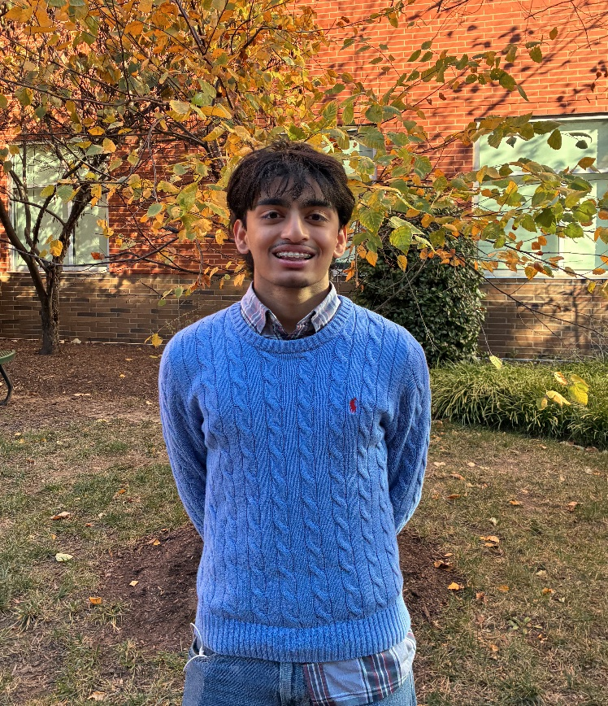

Meet the Team
Our team combines curiosity, creativity, and engineering to develop an early earthquake detection system that is both practical and innovative. Through collaboration, experimentation, and problem-solving, we turn ideas into working solutions that connect science with real-world impact.
